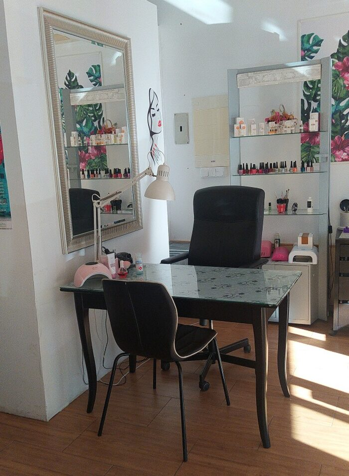
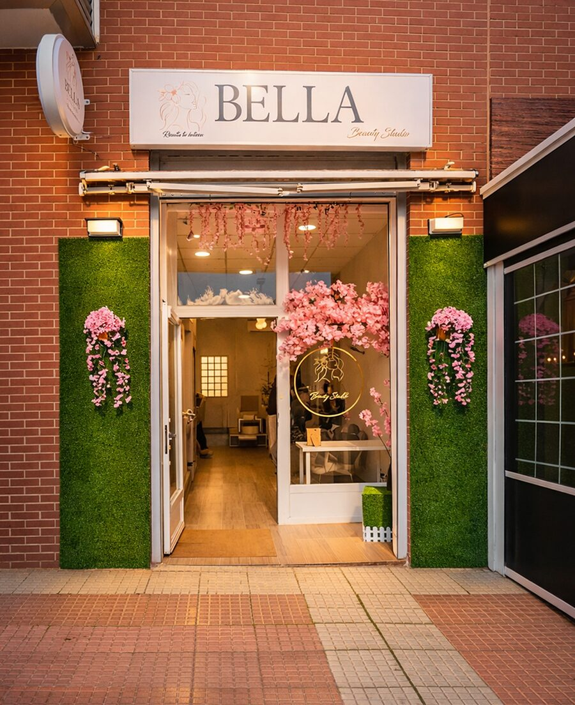

Manicura y semipermanente
Limado, cutícula y esmaltado en gel o semipermanente. El acabado que aguanta el día a día sin levantarse.


Bela Nails Studio es un centro de estética en el centro de Torrejón de Ardoz especializado en el cuidado de las uñas y de la imagen: manicura y pedicura, uñas de gel, diseños hechos a mano y depilación con cera o hilo.
Al frente está Ikram, que trabaja cada mano mirando el estado de la uña y lo que cada clienta quiere. Se atiende con cita previa, así que el tiempo del que dispones es tuyo de principio a fin.
Uñas, piel y depilación. Cada servicio empieza por mirar lo que tienes delante: la forma de la mano, el estado de la uña y el diseño que te apetece.
Limado, cutícula y esmaltado en gel o semipermanente. El acabado que aguanta el día a día sin levantarse.
Largo y forma a tu medida, con reconstrucción cuando la uña lo necesita y trabajo de mantenimiento.
Diseños pintados a mano: francesa, geométricos, flores y pedrería. Se elige en el estudio, mirando tu mano.
Pies cuidados de principio a fin: durezas, forma y esmaltado, con el mismo mimo que las manos.
Cera tibia e hilo para cejas, labio, axilas, piernas y zonas delicadas. El hilo perfila sin tirar de la piel.
La línea Rejuvenece: masaje y tratamiento facial para completar el cuidado de la piel en la misma visita.
Depende del largo, del diseño y del estado de la uña, así que se presupuesta antes de empezar y sin compromiso. Escríbenos por WhatsApp con lo que quieres y te lo decimos.